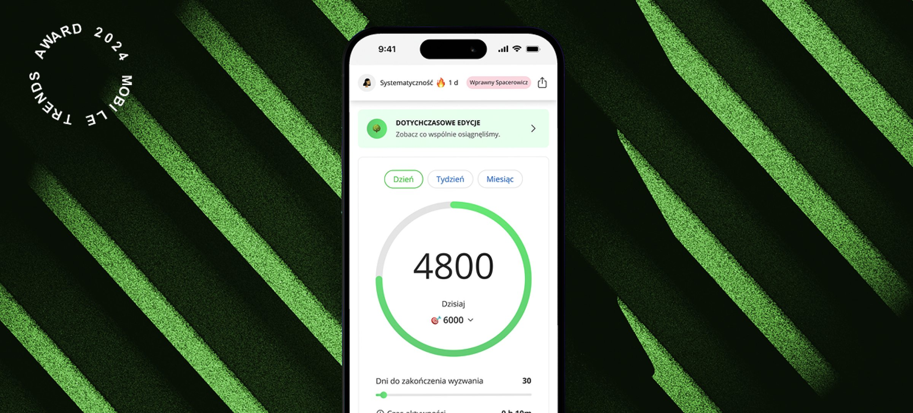
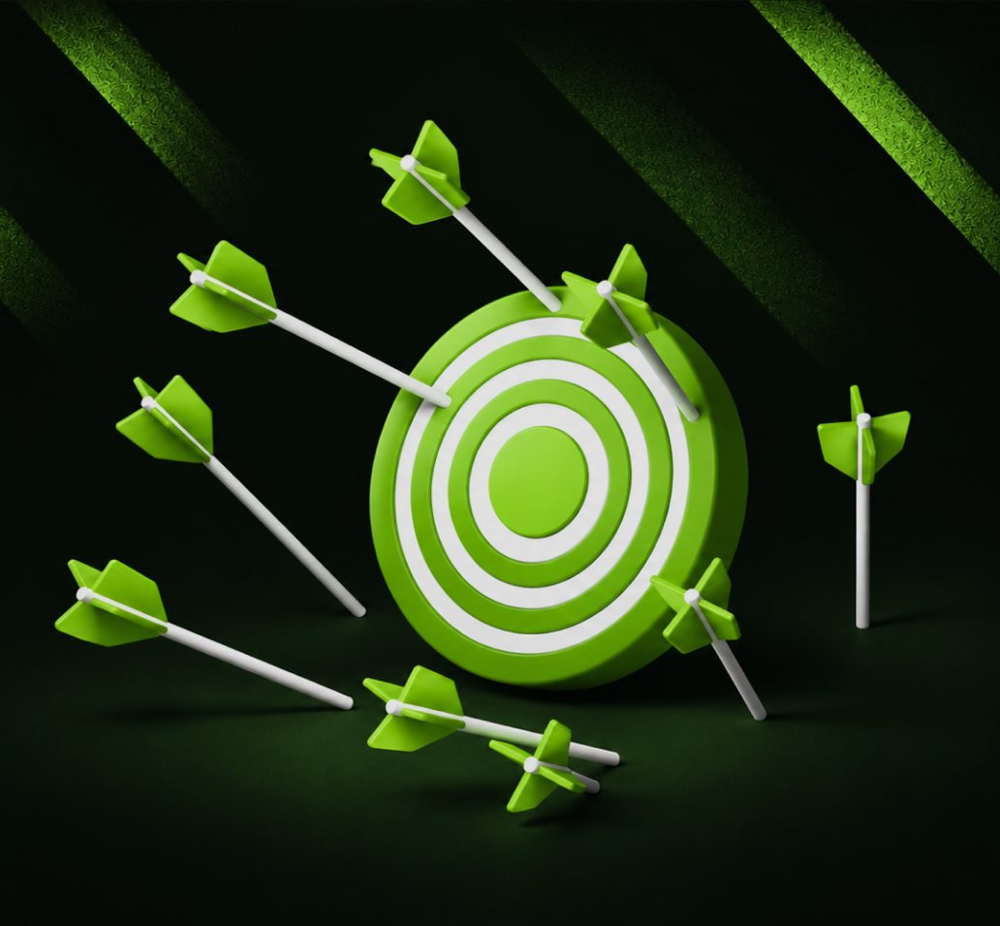

Healthy Cities - jak zamienić aktywność użytkowników w 15 tysięcy posadzonych drzew
- Moja rola
- UX/UI Designer
- Czas
- 2024
- Obszar
- Research, Grywalizacja, CSR

Nowa aplikacja miała angażować użytkowników, ale problemy z synchronizacją danych wpływały na ich doświadczenie
- 15 286Uczestników wyzwania
- 1,5 mln kmPokonanego dystansu
- 1,9 mldWykonanych kroków
- 15 286Posadzonych drzew
Kontekst
Poprzednia wersja aplikacji nie zapewniała wiarygodnego monitorowania aktywności i nie odpowiadała na potrzeby uczestników
Zidentyfikowaliśmy 3 obszary wymagające zmian

-
Niewiarygodne dane
Błędy w zliczaniu kroków, rozbieżności w raportach i niekompletne dane uczestników.
-
Ograniczone doświadczenie użytkownika
Długi onboarding, ograniczona funkcjonalność i brak możliwości rejestrowania dodatkowych aktywności.
-
Niewystarczające wsparcie
Wolna obsługa zgłoszeń i ograniczone możliwości zarządzania uczestnikami grup.
Research
Użytkownicy potrzebowali większej kontroli nad aktywnością i udziałem w wyzwaniu
-
Prosta rejestracja
Szybkie logowanie różnymi metodami
-
Elastyczne grupy
Jednoczesna reprezentacja miasta i firmy
-
Wiarygodne dane
Dokładna synchronizacja kroków i dodatkowe aktywności
-
Wsparcie
Szybka pomoc i zarządzanie uczestnikami